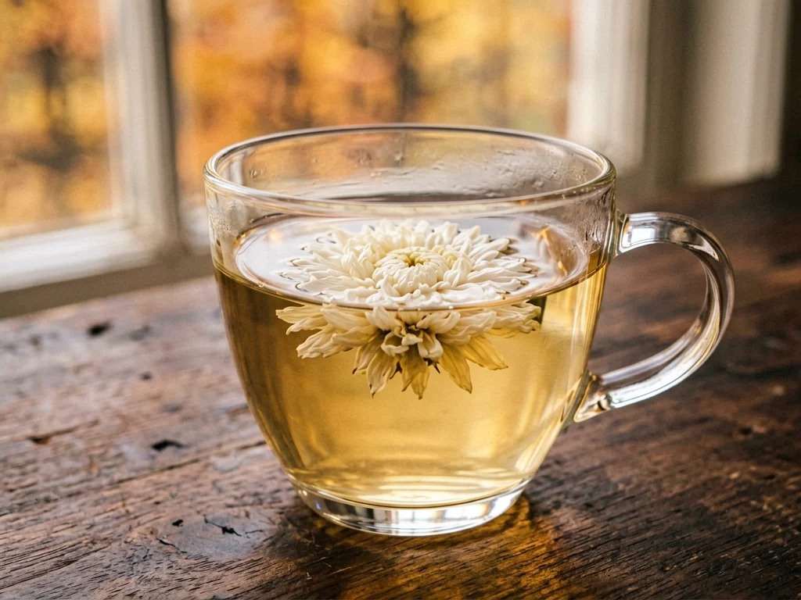

Chrysanthemum Tea for Autumn Dryness — A Cooling Ritual from a Chinese Household
When autumn air turned dry and brittle, my grandmother would reach into the very bottom of the tea tin — past the everyday green tea leaves that filled the top half, past the folded paper divider she'd cut from a flour bag — and pull out a few dried chrysanthemum flowers. They were pressed flat, the color of pale straw, each one a whole miniature flower head with its petals folded inward like a tiny paper umbrella that hadn't been opened yet. She'd drop one into a glass cup, pour hot water over it, and wait. Not for the taste — though the taste was pleasant, floral and faintly bitter and clean. She waited because the steam was the point. For ten minutes every autumn afternoon, she'd hold the cup in both hands, tilt her face just above the rim, and let the warmth rise into her skin. "Autumn makes everything dry," she'd say. "This puts something back."

The tea tin had layers
My grandmother's tea tin was an old square biscuit tin, the kind with a hinged lid and a faded illustration of a European castle on the side — a gift from someone who had traveled somewhere, repurposed for a lifetime of tea storage. It wasn't organized the way a modern pantry is organized, with matching containers and printed labels. It was organized like a geological formation, in layers of use.
The top layer — the everyday layer, the one you reached for without thinking — was loose green tea. Nothing expensive. Just the kind of green tea that came in a paper bag from the market, rolled into small dark curls that unfurled in hot water. This was the tea for ordinary days: after lunch, when a guest dropped by, when you needed something hot and the occasion didn't call for ceremony.
Beneath that layer — separated by a piece of folded paper she'd cut from an empty flour bag — was the chrysanthemum layer. Not tea leaves at all, but whole dried flowers. She kept them apart from the green tea not because they'd contaminate each other but because they belonged to different seasons, different purposes, different moods. Green tea was for any day. Chrysanthemum was for autumn, and for days when the air turned sharp and dry and you felt the season in your throat and on your skin — which, in autumn, was most days.
The paper divider was her own quiet system. No one told her to separate the layers. She just liked things to know their place, and chrysanthemum was something you planned to reach for, not something you grabbed by accident when you meant to make green tea. The divider meant you had to pause and lift the paper and look into the bottom of the tin — a small, physical acknowledgment that this was a different kind of cup.
A flower that becomes tea
Chrysanthemum tea — ju hua cha (菊花茶) — is made from the dried flower heads of certain varieties of chrysanthemum bred specifically for tea rather than for garden display. The most well-known is hang bai ju (杭白菊) from Zhejiang, the white chrysanthemum of Hangzhou, whose dried flowers are small and compact and pale, opening in hot water into a loose spray of white petals around a yellow center. Another common variety is gong ju (贡菊) from the Huangshan mountains in Anhui — the "tribute chrysanthemum," so named because it was once sent to the imperial court. Its flowers are slightly larger and the petals a bit sturdier, so they hold their shape longer through repeated steepings.
What you get at the Chinese grocery or herbal shop is a box or bag of dried whole flowers — dozens of them, each about the size of a coin, lightweight and papery and faintly fragrant. They look like something you'd find pressed between the pages of an old book. You don't crush them or grind them or measure them with a spoon. You use one flower per cup. Maybe two, if the cup is large or the flowers are small. The flower itself is the unit of measurement.
Chrysanthemum appears in the Shennong Bencao Jing (The Divine Farmer's Materia Medica), one of the oldest Chinese herbal texts, compiled around the first or second century CE. The text lists ju hua among the superior herbs — the ones that could be taken regularly without harm — and notes its cooling nature and its connection to the season of autumn. But long before the herbalists wrote about it, people were steeping chrysanthemum flowers in hot water and drinking the result. The herbals were recording something people already knew. The knowledge didn't start with the text; it started in kitchens, and the texts caught up later.
The steam ritual
The chrysanthemum habit was fundamentally different from the green tea habit in my grandmother's house — not just in the ingredient, but in the posture. When she drank green tea, she drank it. Cup to lips, sip, swallow. The tea was the point. With chrysanthemum, the steam was at least as important as the drinking, maybe more.
She used a glass cup for chrysanthemum — never ceramic, never the lidded enamel mug she used for green tea. The glass was necessary because you needed to see the flower open. Watching it was part of the ritual: the dried bud dropped in, the hot water poured, the slow unfolding as the petals rehydrated and spread outward, the water turning pale yellow around it. The whole process took maybe two minutes, and she'd watch it the way some people watch a fireplace — not with intense attention, but with a quiet, unfocused gaze that wasn't really about seeing anything in particular.
Once the flower had opened, she'd lift the cup with both hands — not by the handle the way she held her green tea mug, but cradled, palms against the glass, fingers wrapped around. She'd bring it close to her face, not to drink but to let the steam rise into her skin. She'd half-close her eyes and breathe slowly — not a breathing exercise, just the natural rhythm of someone who wasn't in a hurry. The steam, faintly floral, rose into her face. She'd stay like that for five minutes, maybe ten. Then she'd take a sip. Then another pause. The sipping and the steaming alternated, without any fixed pattern, until the cup was empty or the water had gone cold.
I asked her once, with the directness of a child who hasn't yet learned that some things aren't asked, "Why do you put your face over the cup like that?" She didn't answer right away. She considered it — you could see her turning the question over, looking for words that fit something she'd never had to articulate. Finally she said, "The steam is warm, and the warmth goes where it's needed." That was the whole explanation. No theory. No terminology. Just a lifetime of autumn afternoons and the observation that this felt good and cost nothing.
Autumn dryness in Chinese folk language
Chinese folk tradition has a word for what the autumn air does to the body: zao (燥) — dryness. Not the kind of dryness you measure with a hygrometer, but the kind you feel: in your throat when you wake up, on your lips by mid-afternoon, in your skin after a day of wind, a tightness in your chest that has nothing to do with illness and everything to do with the season stripping moisture from the world. The folk understanding of autumn dryness isn't that it's a disease. It's that autumn, by its nature, draws moisture out of things — the leaves, the soil, the skin — and that the reasonable response is to put moisture back, ideally in gentle, gradual ways that don't shock the system.
This is where chrysanthemum tea lived in my grandmother's household: as the autumn countermeasure. Not a treatment. Not a remedy. Just the thing you reached for when the season changed, the way you reached for a thicker blanket or a bowl of hot soup. Where summer had mung bean soup — thin, green, cooling, drunk standing up at three o'clock to beat the heat — autumn had chrysanthemum tea: floral, faintly bitter, sipped slowly with a face tilted over the steam, pushing back against the dryness rather than the heat. Two seasons, two drinks, the same logic of matching what you consumed to what the air was doing.
In the old herbal language, chrysanthemum was described as liang (凉) — cooling — and was paired with autumn the way mung bean was paired with summer. The Shennong Bencao Jing lists it among the cooling herbs; the Bencao Gangmu elaborates on its seasonal role. But again, the herbals were recording something that had been kitchen practice for centuries before anyone wrote it down. My grandmother never read either text. She knew about chrysanthemum the way she knew about ginger for cold days — not from books but from her grandmother, who got it from hers. The knowledge was a chain of autumns, not a chain of texts.
Sometimes with goji berries
The most common variation on chrysanthemum tea — in my grandmother's house and in countless others — was the addition of a small pinch of dried goji berries. Three or four of them, dropped into the cup alongside the flower, their red deepening to a glossy crimson as they rehydrated in the hot water. After she'd finished drinking, she'd tip the cup back and eat the berries — soft now, slightly sweet, slightly tart, the texture of a soaked raisin.
Chrysanthemum and goji were a pair in the folk imagination — two things that belonged together the way ginger and scallion belonged together, or winter melon and rock sugar. The goji contributed a faint sweetness to the water and a bit of color: red berries drifting around a white flower in pale yellow tea, beautiful in a way that required no arrangement or intention. The pairing was so common that at Chinese grocery stores you could buy boxes of "chrysanthemum-goji tea" with the two already mixed — though my grandmother would have found this prepackaged combination ridiculous. Why pay extra for someone to put two things in the same bag when you already had both in separate jars and could combine them yourself in three seconds?
In our house, goji tea had its own slot in the daily rhythm — a warm, mellow cup for quiet afternoons when the body felt heavy or slow. But the goji berry cup was for any season, year-round; chrysanthemum was for autumn cooling specifically. The two habits often overlapped in October and November, and when they did, the cup became a chrysanthemum-goji cup by default. Where chrysanthemum was sharp and cool — a seasonal response to dry air — goji was round and sweet and steady, a daily constant. They didn't compete. They shared the same cup and each did its own thing.
One flower, all day
The dried chrysanthemum flower was not a single-use ingredient. She'd pour more hot water over it throughout the day — a second steeping after lunch, a third in the late afternoon, sometimes even a fourth after dinner. Each infusion was weaker than the last, the color of the water progressing from pale gold to barely-tinted, the flavor fading from floral to something closer to warm water with a memory of flowers. But she didn't mind the diminishing returns. The later steepings were gentler, and gentleness was part of what she was after.
By the end of the day, the flower in the bottom of the cup was fully spent — petals loose and half-transparent, the center gone soft, the whole thing looking like a flower that had been through a long rain. She'd tip it into the sink or, if she was in the courtyard, toss it onto the soil of the vegetable patch. One flower per day. The tea tin at the bottom of the tea-tin strata lasted an entire autumn at that rate, and when spring came and the weather turned humid again, she'd put the lid back on and the chrysanthemums would wait, papery and patient, for October.
The taste of autumn
If green tea tastes like a hillside after rain — vegetal, grassy, sharp in a clean way — chrysanthemum tea tastes like a garden. Floral, but not in the heavy way of jasmine or rose. Chrysanthemum is lighter, cooler, more distant. There's a faint bitterness at the back of the sip, but it's a clean bitterness, the kind that registers and then vanishes, leaving the mouth feeling rinsed rather than coated. If you've ever tasted chamomile, chrysanthemum is in the same family — the Asteraceae, the daisies and their relatives — and there's a family resemblance, but chrysanthemum is less sweet and more mineral, closer to the taste of a cold stream than to the taste of a honeyed cup.
The water matters. My grandmother used boiled tap water, because that's what she had, but the ideal is water just off the boil — about 90°C rather than a full rolling 100°C. Full-boiling water can scald the petals and release too much bitterness all at once. Water that's slightly cooler coaxes the flower open more slowly and produces a rounder, more balanced cup. She knew this not as a temperature specification but as a gesture: she'd let the kettle sit for a minute after it boiled before she poured. That pause wasn't impatience. It was precision, disguised as habit.
I keep dried chrysanthemums in my own kitchen now
Autumn in my city doesn't feel the way it did in hers. The buildings block the wind differently. The apartment heating comes on before the cold really arrives. But the dryness still finds me — in October, when the air goes brittle and my skin feels tight and my throat catches in the morning. The modern world has its own way of being dry: heated offices, air-conditioned rooms, the endless pull of moisture out of everything. The season hasn't changed, even if my tools for responding to it have.
I keep a bag of dried chrysanthemum flowers in my cupboard, in a glass jar rather than a biscuit tin, and when the air turns brittle I drop one into a cup and pour hot water over it. The same kind of flower. The same pale straw color. The same slow unfolding. My cup is double-walled glass now, because the single-walled glass she used would burn my city-soft hands, but the principle is the same. I tilt my face over the steam. I half-close my eyes. For five minutes, I'm not looking at anything, and the warmth rises into my face, and the slight floral scent of chrysanthemum fills the air just above the cup.
It's not going to fix anything. That's not the point. The point is that it's a ritual — a small one, contained entirely within the space of a cup and ten minutes — and rituals don't need to fix things to be worth doing. Sometimes they just need to mark the season, and remind you that autumn has arrived, and give you an excuse to pause and look instead at a flower opening in hot water. My grandmother understood this without ever putting it into words. It took me thirty years and a bag of dried flowers to understand it too.
Materials
- Dried chrysanthemum flowers for tea (ju hua, 菊花) — available at Chinese grocery stores, herbal shops, and online. Look for hang bai ju (Hangzhou white chrysanthemum, smaller, whiter, more delicate) or gong ju (Huangshan tribute chrysanthemum, slightly larger, sturdier petals). Choose flowers that are intact, pale-colored, and fragrant. Avoid any that look brown, crumbled, or smell musty.
- A glass cup — so you can watch the flower open. Double-walled if your hands are sensitive to heat.
- Hot water — just off the boil, around 90°C / 195°F. Let the kettle sit for a minute after boiling before pouring.
- Optional: dried goji berries (gou qi, 枸杞) — 3 to 4 berries per cup. Adds a faint sweetness and a red accent to the pale yellow tea.
Steps — A single cup of chrysanthemum tea
- Boil water. Let it sit for about one minute after boiling — you want it hot but not scalding.
- Place one dried chrysanthemum flower in a glass cup. (If using goji berries, add 3–4 now.)
- Pour the hot water over the flower. Watch it open — the petals will spread and the water will turn pale yellow over about two minutes.
- Hold the cup in both hands. Tilt your face slightly above the steam. Close your eyes halfway. Breathe normally. Stay here for as long as feels right — five minutes, ten, it doesn't matter.
- Sip when you want to sip. Pause when you want to pause. There's no correct rhythm.
- When the cup is empty, add more hot water. The same flower will steep a second, third, or fourth time, each infusion lighter than the last.
- At the end of the day, discard the spent flower. One flower, one day.
A few things to keep in mind
Chrysanthemum is in the Asteraceae family — the daisy family, which includes chamomile, ragweed, marigolds, and sunflowers. If you have a known allergy to plants in this family, you may react to chrysanthemum tea. If you've never had it before and know you have seasonal pollen allergies, try a small sip first.
Steam from a hot cup can burn skin. Hold your face at a comfortable distance — the warmth should feel pleasant, not painful. You don't need to be close to feel the effect. The steam travels further than you think.
Chrysanthemum tea is a beverage — a cultural habit enjoyed for its taste, its warmth, and its connection to the autumn season. It is not medicine. The old herbals describe it in the language of their time, which is interesting as cultural history but should not be read as modern instruction. If you feel persistently unwell in any way, a conversation with a qualified professional is worth more than any cup of tea.